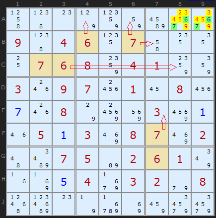
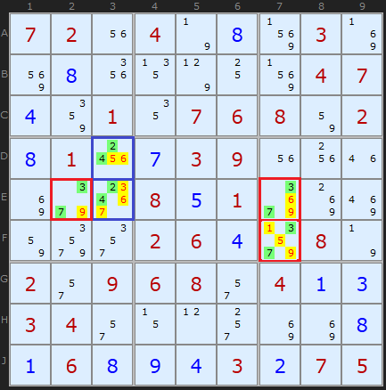
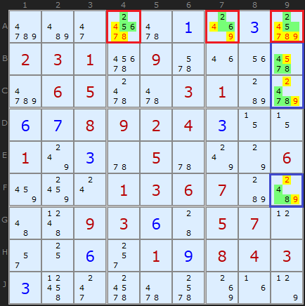
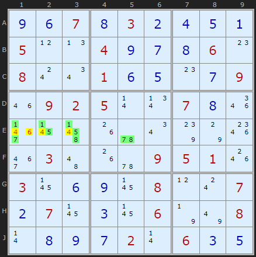
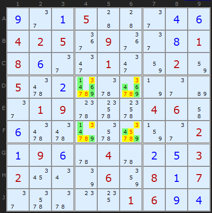

SudokuWiki.org
Strategies for Popular Number Puzzles
Hidden Candidates
Hidden Pairs
Looking for Hidden Pairs is a great way to open up the board. This approach can remove a cluster of candidates from two cells and leave behind simple pairs which are the building blocks of more complex elimination strategies.


This is a more interesting and complex set of Hidden Pairs. Three occur simultaneously. In the blue rectangle, [2,4] form a Pair on D3 and E3, clearing off 3, 5, 6 and 7. The red cells indicate two Hidden Pairs based on [3,7], which form a neat corner of three cells. [3,7] is unique to two cells in row E and two cells in column 7. The yellow highlighted cells can be removed.
Hidden Triples
We can extend Hidden Pairs to Hidden Triples or even Hidden Quads. A Triple will consist of three pairs of numbers lying in three cells in the same row, column or box, such as [4,8,9], [4,8,9] and [4,8,9]. However, in just the same manner as Naked Triples, we don't need exactly three pairs of numbers in three cells for the rules to apply. Only that in total there are three numbers remaining in three cells, so [4,8], [4,9] and [8,9] is equally valid. Hidden Triples will be disguised by other candidates on those cells, so we have to prise them out by ensuring the Triple applies to at least one unit.

This tough puzzle has two Hidden Triples: the first, marked in red, is in row A. Cell A4 contains [2,5,6], A7 has [2,6] and cell A9 contains [2,5]. These three cells are the last remaining cells in row A which can contain 2, 5 and 6, so those numbers must go in those cells. Therefore we can remove the other candidates.
Now that we've removed those candidates from the red cells, we can see in column 9 that [4,7,8] is unique to cells B9, C9 and F9. By the same logic we can clear off other candidates in those cells.
(The solver will not choose the second example as Naked Triples get there first)

Hidden Quads
Here is the one example of a Hidden Quad I found in a set of 55,000 Sudoku puzzles. Four numbers [1/5/7/8] on four cells are hidden by just 4s and 6s in row E. Note how none of the cells need to have all four numbers, as long as only four cells contain all four numbers and are intermingled.
(example replaced Nov 2025)

Klaus Brenner in Germany has found a number of excellent Hidden Quads, and I include one here to show they do exist.
The Hidden Quad is {1,4,6,9} in Box 5 and exists only in the four cells [D4,D6,F4,F6]. Therefore other candidates (red text on yellow background) can be removed.
This very special puzzle also produces a perfectly formed Empty Rectangle later on.
We don't consider higher orders of Hidden candidates because there are only 9 cells in a unit. So if we were to suppose a "Hidden Quin" with five candidates there would automatically be a complementary Hidden Quad since 5 + 4 = 9. Same point arises with Naked sets. It may be viable to look for such beasts in 12x12 or 16x16 Sudokus.
Comments
Email addresses are never displayed, but they are required to confirm your comments. When you enter your name and email address, you'll be sent a link to confirm your comment. Line breaks and paragraphs are automatically converted - no need to use <p> or <br> tags.
... by: Jim
This is not quite true. What is true (and this is ALWAYS the case), is there is a complementary 'naked' at the same time. This 'always' existence of a complementary part can 'only' be made on the hidden candidate rule. For the naked candidate rule, this complementary rule (the hidden complement), will only be there 'some times' :)
The formula for any 'house', is this: S + Nx + Hy is always 9 (S+x+y == 9). This means that the count of solved cells (S) plus the count of all different 'naked' x-tuples (any naked singles, naked pairs, trips, etc), + the count of all different 'hidden' y-tuples will always be 9 (it must be, since there is a rule of all of 9, meaning each digit 'must' exist in the house). The 'value' of these 2 rules (hidden and naked) is the times where x!=0 AND y!=0 at the same time (note, until S==9, x will always be non zero).
Lets look at your example 1 on this page (great example! :), the 'hidden pair' shown is 6,7. First off, there is a semi rare condition (in the row), where S == 0 (no solutions). We have been 'shown' a Hidden pair (H2) in a8a9. However, at the same time, there is its complement, a Naked-7 (1234589) in the other 7 cells. Both the N7 and the H2 cancel out the exact same 9 candidates in the 2 cells: a8a9, they always will, since the H2 and the N7 are purely complementary to each other.
One nice 'extra' about this first example, is that a8a9 purely lives in box-3, so the same 'observation' can be done for box-3. Box-3 has 8 unsolved cells (so here S1). If we look closely at only box 3, we also find that we have a hidden pair (H2 the same one in a8a9 for 67), and a Naked-6 with (234589) (the other 6 cells), and of course the 1 solved cell. Thus for the box-3 we have S1+N6+H2 == 1+6+2 == 9.
The whole point of this comment is to simply point out that 'naked' vs 'hidden' is just looking at the other side of the coin (or actually 2 complementary ends of the same constraint). The important 'information' being discovered by this 'pair of' rules is not the single, or pair, or triple, the 'important' part is the candidates being removed due to the constraint violation. Either way you look at these 2 rules, they 'both' will lead to the exact same conclusion, they always do and always must.
Now, there 'can' be cases where there are more than 1 naked, or more than 1 hidden 'at the same time' in the house. There will also be a lot of times where there is 'this' formula (which is not yet useful): S+NX+H0 (X=9-S and there are no N1 in the house). This simply means that at this time, there are the solved cells, and all other of the 9 cells make up either one or multiple 'naked' groups, and there are no 'left over' cells (and no naked singles). At this point, we have to 'wait' for this house to be usable by the hidden/naked rules, until some other rule 'helps' our house out and removes 1 or more possible candidates from some cells.
... by: Gwenba
... by: Michael
It seems like a very useful rule, but tried to validate it by working backwards by starting with a unit with a very simple 1,2 - 2,3 -1,3 triple in the unit. I then chose 3 cells where I arbitrarily assigned a solved number (other than 1, 2, or 3). However, I was not able to validate the rule. Not sure what I am doing wrong, so would appreciate some logical insight to why this rule works.
"There is a clue which will help someone in spotting hidden triples. If there is a hidden triple it must be in a unit with two or less solved squares.
Andrew Stuart writes:
This is a good insight."
Now if there is a solved cell it is removed from both the hidden and the naked set.
Thus with three solved cells a hidden triple must be accompanied by a naked triple, which with the order on this site you would find first.
... by: Ymiros
Take your final example for example, the hidden quad is 1469 and the complementary naked quint is 23578 in the cross shape section of the middle box.
Quite neat explanations though, thank you very much for that!
... by: tofubob
... by: Leo J
- why no "4" in cell J7? (how did you know it CAN'T be a 4?)
- why no "2" in cell G7?
thanks/i understand if you don't have time to answer this.
... by: Nathan
... by: alan g
I recently encountered an "easy" puzzle but it proved to be the hardest one I've met.
I got as far as I could with it but couldn't make any further progress until I found this page which told me about hidden pairs etc..
I eventually solved it but the answer I obtained was slightly different to the one given in the paper.
however every row column and mini grid in my solution, each contained the numbers 1-9, which is surely the definition of the correct solution.
the trouble with this particular puzzle is that there are many ways to apply the hidden pairs to, and I think the solution depends on where you start
... by: Liz
Is it not generally easier to find a naked set than a hidden one, even if the naked set is a 5, 6, or even 7-tuple?
In your first example above, I would have noticed first that 4,7,8,9 form a naked quad, making a triple out of 2,5,6. Even in your last example, 2,3,5,7,8 form a fairly obvious naked quint.
Because of this I'm having trouble understanding why "hidden candidates" is even discussed as a separate strategy.
Or are there cases where a hidden set does not have a complementary naked set? (which depends, perhaps, on exactly how "hidden" is defined)
... by: pyorokun7
Also, by the time it detects it, one of the 6 is already eliminated
Hidden Quad 3/4/5/7 in Col 7, on cells [E7,F7,G7,H7]
- removes 6 from H7
(the other 6 was removed by the APE that eliminated the 4 in J7, creating the Hidden Quad itself)
So probably it should be updated, or maybe should use another example.
By the way, is there a reason why the last row is J, instead of I?
... by: pyorokun7
Your solver (I guess after an update) no longer detects this Hidden Quad in Col 7; after the Naked Pair in Box 3 of 3/7, it jumps to X-Wing
... by: Hamza Zaidi
... by: KDot93
PS: I'm new to advanced sudoku-ing/this website, so if that's an incorrect explanation/there is a direct "reply" function, please let me know! (somehow...). Or perhaps if Andrew could make an "answer/reply" function so he doesn't have to respond to all the comments, that would be great!
PPS: Really awesome website!
... by: YBB
... by: Jwamyr
... by: Didi
If you can use a single or pair for pointing, it's regardless of whether it's hidden or naked. The thing that I wanted to point out is that if you've found "some stuff" inside a block ("claiming", "pointing", "naked/hidden pair"), then you always should keep your focus where you currently are, to watch out for more of that "stuff" that could be found now, either beeing human, or a computer solving the riddle.
P.S.: Your site here is brilliant, thank's a lot!
... by: Didi
The fact is also interesting to programmers: If you want efficient computer code, this check can be done immediately and more effortlessly, rather than checking again with an extra-algorithm.
... by: Doc
Likewise, there are other 9's in column 7 so only 3/7 makes a pair in that column
... by: Peter Heichelheim
>If there is a hidden triple it must be in a unit with two or less solved squares.
Can anyone explain the reasoning behind this? I feel like it's less an inherent truth and more along the lines of:
"If a unit has >2 solved squares then the solver probably already indirectly eliminated the hidden triple by using some other strategy elsewhere in that unit".
I REALLY want to understand this insight.
Suppose that there are 3 solved squares, say, 1,2,3, and that there is a hidden triple of 4,5,6, i.e. 3 squares that containing 4,5,6 and at least one of 7,8,9. Look at the other 3 squares. They must be naked triples containing 7,8,9, which would be much easier to spot and would have eliminated 7,8,9 from the original 3 squares in the first place.
So the insight is that in order for a unit to contain a true hidden triple (meaning no naked triple in this unit), the unit must contain at most 2 solved squares.
... by: Y.Sato
In the example of Hidden Triples on this page,
I found two candidates of Hidden Triples in column 9 according to my rule.
A: { {4, 7, 8}, {4, 7, 8}, {4, 8} }
B: { {4, 8, 9}, {4, 8, 9}, {4, 8} }
Your solution is the candidate A.
Why is the candidate B not a solution ?
Would you please teach me the reason ?
Best regards,
Yoshihiro Sato
... by: tu_79
... by: ad.joe
"ONE DIMENSIONAL":
As can easy be seen in example 2 of the Hidden Pairs, it only deals with column 7!
So it's like this:
Basic strategies deal with only on row, one column OR one box, therefore are working ONEDIMENSIONAL! While advanced techniques/strategies are working moredimensional: in more than one row AND column AND work.
And I've never read such a sentence "anywhere", what do YOU say?
Besides a hidden subset is easier to be understood (for most people) as an x-wing, it can still hard to be found, becaus one has to look up the occurences (2 for instance) of the numbers in this one dimension.
... by: m&mjabb
(beginner sudoku player)
... by: amarabavani
... by: adivandhya
... by: Ritesh
Give me more examples to understand hidden Quads
... by: Chuck Watson
What I wanted to point out is your last example of a hidden quad actually also shows a naked quintuple. To me the naked quintuple is easier to see.
... by: Joseph Badillo
Question regarding making a mistake:
Your almost to the end and you find out that a 6 and a 9 does have been repeated. Are there short cuts you can take to find out where you made a mistake other than starting over?
... by: Walsh
From that example you can see that the 4 has to be part of the hidden triple since it has to be in one of those two squares. The three and one cannot be used because it has possiblilities in other places in that block. A Hidden triple will have a sequence of numbers that are in only three boxes in a row, column, or block.
... by: Jim R
... by: Bill
... by: David Harkness
The key is that the three numbers involved in the triple must occur in only three cells. In your example, 124 is not a triple because 2 is a possible in 5 cells. Each number must be a possible in at most 3 cells (2 for a hidden pair, 4 for a hidden quad, etc).
Naked Pairs is where you eliminate the numbers in the pair from other cells.
Andrew, the section on triples mentions "three pairs" of numbers, but often one of the cells will contain all three numbers. Is "pairs" here simply a copy/paste error from the section above, or does it have some other significance? I understand that sometimes the numbers appear in pairs in 3 cells, but that's not necessary.
Also, the first paragraph has an extra word: "hidden in in the squares".
... by: Lloyd Pape
... by: Sarah
Great site. I'm terrible at spotting hidden triples. Any tips, hints on becoming better at this?
Thanks!
Sarah
... by: csvidyasagar
... by: robin smith
Just a thought.
But it's stil a great site.
Robin Smith
... by: Maurice Popple
Questions: (1)How many unique (ie. one solution) puzzles exist in the 9X9 Sudoku matrix (I tried to calculate and got a brute of a binominal I could not resolve)? (2)What is the minimum number of given entries at the start to uniquely define a puzzle?
Many thanks, Maurice
... by: Chuck Bruno
I have written several times but I must repeat "This is a great site". That being said, I have a question:
How do you determine what the difficulty level should be for a given stratagy?
I personally find that Pointing Pairs, Box/Line Reduction, X-Wing, and Unique Rectangles, are much easier to spot than Hidden Triples. When I get stumped on a Sudoku, I import it into your Solver, uncheck stratagies I don't usually look for, and step through it. In most cases, I find that I simply overlooked something silly. In some cases however, the Solver finds a hidden double or triple. Because these can't be turned off like the more difficult stratagies, I can't force the Solver around it to see if one of the other stratagies that I normally use, would allow the puzzle to be solved without using the naked double or triple.
In summary, I would like to be able to selectively turn off the "easier" stratagies just as can be done with the tougher ones.
Thanks for your time,
Chuck Bruno
... by: Roger